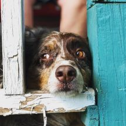

About
Most important thing to me is family and friends. I love to spend as much time as possible with them. I also love to travel. The southwest is my favorite part of the country. Deserts and mountains are incredibly beautiful.

I'm also an amateur photographer. I love taking photos of people, landscapes, and especially animals. This is Rooster. An austrial shepard that is probably the coolest dog on the planet. Someday, I would like to do it as a side hustle. Goal is have a company running after school.